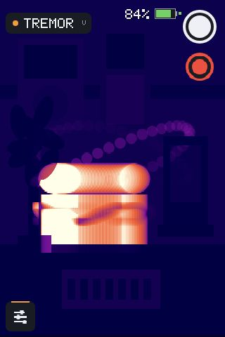

VALUECAM
ESP32-P4RELEASE
OWNER FIRMWARE TOOL
Update your ValueCam
Connect the camera to this computer with its USB programming cable. The updater will install the current release and restart the camera.
- 01
Turn the camera on and connect its USB programming port.
- 02
Use Chrome or Edge, then press Connect camera.
- 03
Select USB Single Serial and keep the cable connected until restart.
iFor a normal update, keep Erase device off. Erase only when recovering a camera that will not boot.

VALUECAMP4
- Target
- ESP32-P4
- Settings
- Preserved
- Recovery
- USB + SD
RECOVERY
Camera not detected?
Disconnect other serial devices, reconnect the camera directly to the computer, and try again. If automatic reset fails, hold BOOT, tap RESET, release BOOT, then reconnect.
The release includes VALUECAM_SD.BIN for microSD recovery. Rename it to VALUECAM.BIN on the card.